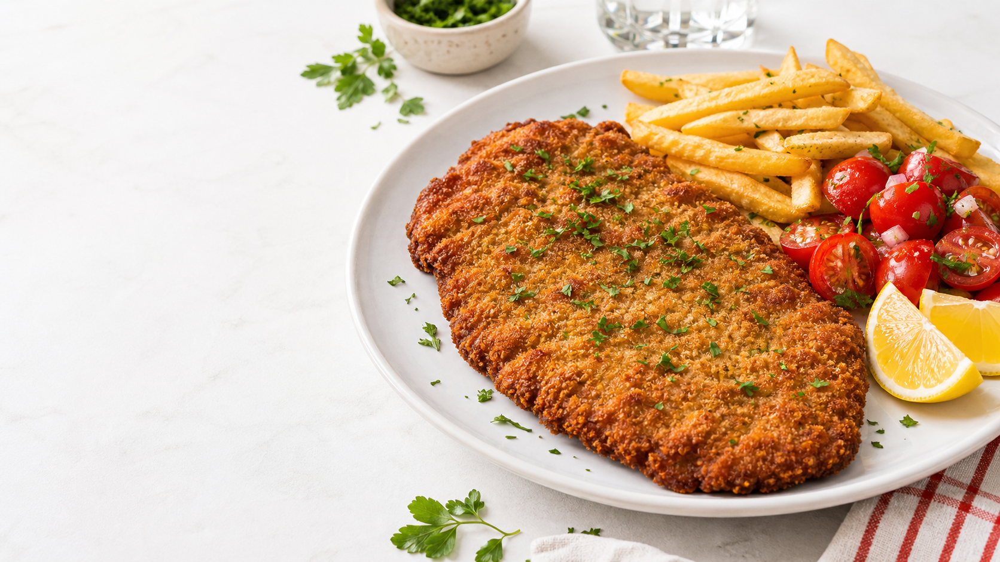
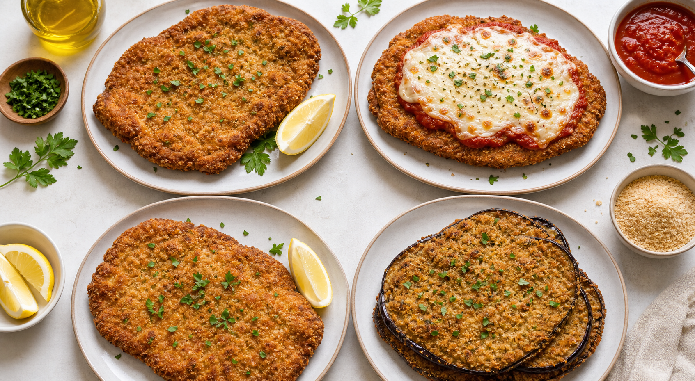

A la napolitana
Salsa de tomate, jamon y queso fundido. La cobertura protege la carne y convierte la milanesa en un plato mas contundente.
Crujientes, simples, bien nuestras
Un recorrido sabroso por el plato que aparece en bodegones, mesas familiares y viandas de todos los dias: dorado por fuera, tierno por dentro y listo para combinar con casi todo.

01
La milanesa llega al Rio de la Plata de la mano de tradiciones europeas de carne empanada, pero aca encontro su propio caracter: cortes finos, pan rallado generoso, fritura precisa y una adaptabilidad enorme.
En Argentina paso de plato familiar a codigo cultural. Puede ser comida de domingo, menu de oficina, sandwich de ruta o cena rapida con pure, papas fritas o ensalada.
02
Cada version cambia el punto de jugosidad, el sabor y el ritual de mesa, pero todas dependen de la misma promesa: corte parejo, empanado adherido y dorado parejo.

Salsa de tomate, jamon y queso fundido. La cobertura protege la carne y convierte la milanesa en un plato mas contundente.
Mas liviana y rapida de cocinar. Funciona muy bien con limon, ensalada fresca y una fritura un poco mas breve.
Berenjena, zucchini o calabaza empanados. Mantienen el crujido y suman dulzor natural sin perder espiritu de bodegon.
03
La carne tiene que llegar seca al huevo. Sal, pimienta, ajo y perejil dan sabor sin humedecer de mas.
Pasar por huevo y pan rallado, presionando con la palma para que la capa quede uniforme y no se desprenda.
Aceite caliente, espacio entre piezas y vuelta unica cuando el borde ya esta firme y dorado.
04
La guarnicion define el clima: papas fritas para bodegon, pure para mesa familiar, ensalada con limon para algo mas fresco o pan frances si la idea es sandwich.
Elegi una base y ajusta las porciones. La guia calcula cantidades simples para cocinar sin quedarse corto.